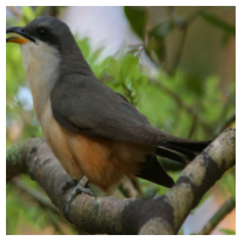
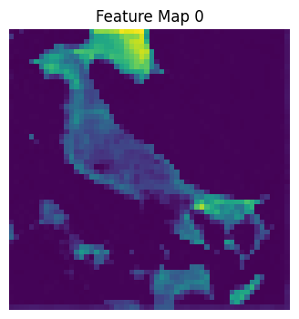
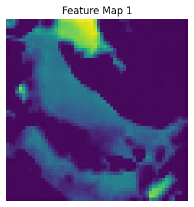
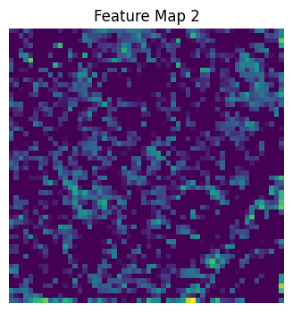
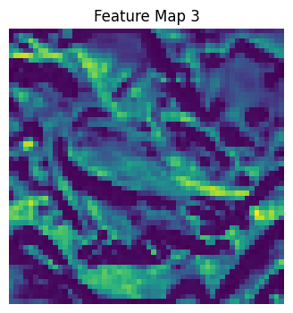
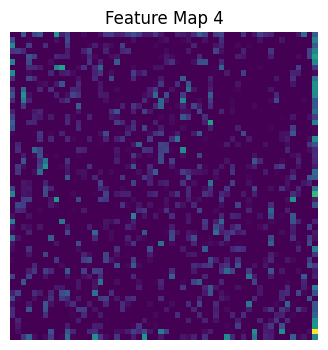
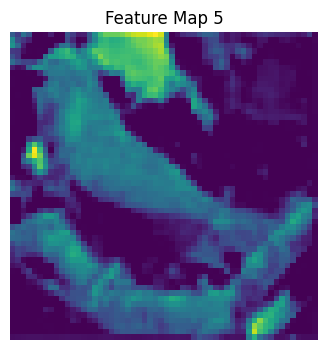

1) Input Image
RGB bird image loaded with PIL.
H × W × 3Caltech-UCSD Birds-200-2011 (CUB-200-2011), transfer learning + classical ML baselines on extracted ResNet50 features.
From image tensor transforms to 2048-D embeddings for classical ML training.
RGB bird image loaded with PIL.
H × W × 3Resize(256) → Crop(224) → Flip/Jitter (train) → ToTensor → Normalize(ImageNet).
3 × 224 × 224DataLoader batches tensors for GPU/CPU inference.
B × 3 × 224 × 224Backbone forward pass with fc = Identity() to get deep embeddings.







| Model | Accuracy | Top-5 | Precision | Recall | F1 | Train (s) | Infer (ms/img) | Size (MB) |
|---|
docs/assignment2/image/data/confusion_matrix/.
The image task was to classify CUB-200-2011 bird images into 200 visually similar species. This is a fine-grained recognition problem where many classes differ by small details such as color patterns, wing markings, beak shape, or pose. Because of this, simple pixel-based features are not sufficient.
The fine-tuned ResNet-50 is the best final model for maximum classification quality. It achieves the highest Top-1 accuracy (70.38%), Top-5 accuracy (91.56%), and macro F1 (0.7049), showing that end-to-end adaptation of the CNN features improves fine-grained bird recognition.
For a lightweight deployment scenario, Logistic Regression is the strongest practical baseline. It reaches 65.31% accuracy and 88.95% Top-5 accuracy with very fast inference and a small 3.13 MB model, making it a good trade-off when GPU fine-tuning or large model storage is not available.